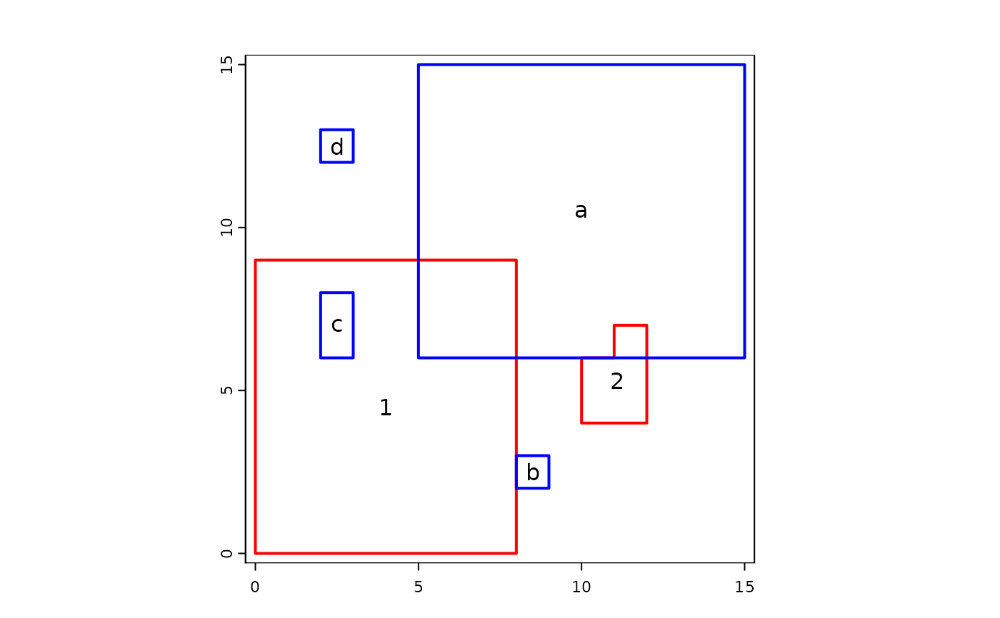
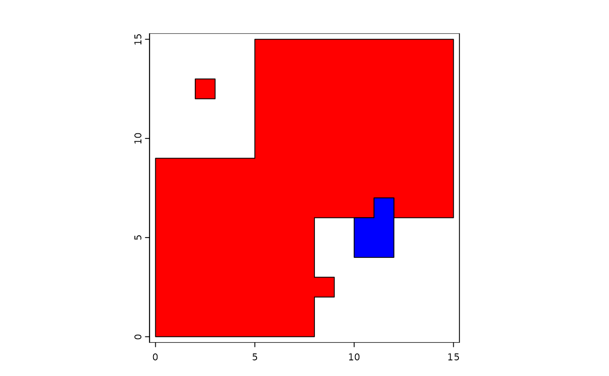
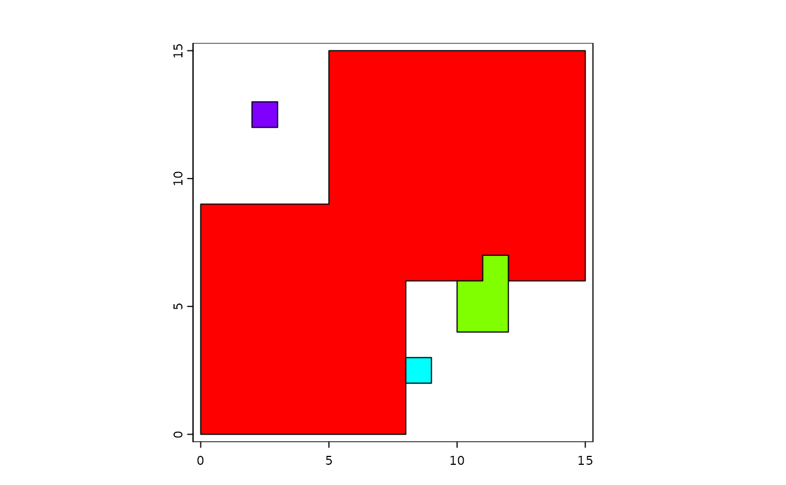

Combine geometries
combineGeoms.RdCombine the geometries of one SpatVector with those of another. Geometries can be combined based on overlap, shared boundaries and distance (in that order of operation).
The typical use-case of this method is when you are editing geometries and you have a number of small polygons in one SpatVector that should be part of the geometries of the another SpatVector; perhaps because they were small holes inbetween the borders of two SpatVectors.
To append SpatVectors use `rbind` and see methods like intersect and union for "normal" polygons combinations.
Usage
# S4 method for class 'SpatVector,SpatVector'
combineGeoms(x, y, overlap=TRUE, boundary=TRUE, distance=TRUE,
append=TRUE, minover=0.1, maxdist=Inf, dissolve=TRUE, erase=TRUE)Arguments
- x
SpatVector of polygons
- y
SpatVector of polygons geometries that are to be combined with
x- overlap
logical. If
TRUE, a geometry is combined with the geometry it has most overlap with, if the overlap is aboveminover- boundary
logical. If
TRUE, a geometry is combined with the geometry it has most shared border with- distance
logical. If
TRUE, a geometry is combined with the geometry it is nearest to- append
logical. Should remaining geometries be appended to the output? Not relevant if
distance=TRUE- minover
numeric. The fraction of the geometry in
ythat overlaps with a geometry inx. Below this threshold, geometries are not considered overlapping- maxdist
numeric. Geometries further away from each other than this distance (in meters) will not be combined
- dissolve
logical. Should internal boundaries be dissolved?
- erase
logical. If
TRUEno new overlapping areas are created
Examples
x1 <- vect("POLYGON ((0 0, 8 0, 8 9, 0 9, 0 0))")
x2 <- vect("POLYGON ((10 4, 12 4, 12 7, 11 7, 11 6, 10 6, 10 4))")
y1 <- vect("POLYGON ((5 6, 15 6, 15 15, 5 15, 5 6))")
y2 <- vect("POLYGON ((8 2, 9 2, 9 3, 8 3, 8 2))")
y3 <- vect("POLYGON ((2 6, 3 6, 3 8, 2 8, 2 6))")
y4 <- vect("POLYGON ((2 12, 3 12, 3 13, 2 13, 2 12))")
x <- rbind(x1, x2)
values(x) <- data.frame(xid=1:2)
crs(x) <- "+proj=utm +zone=1"
y <- rbind(y1, y2, y3, y4)
values(y) <- data.frame(yid=letters[1:4])
crs(y) <- "+proj=utm +zone=1"
plot(rbind(x, y), border=c(rep("red",2), rep("blue", 4)), lwd=2)
text(x, "xid")
text(y, "yid")

v <- combineGeoms(x, y)
plot(v, col=c("red", "blue"))

v <- combineGeoms(x, y, boundary=FALSE, maxdist=1, minover=.05)
plot(v, col=rainbow(4))
